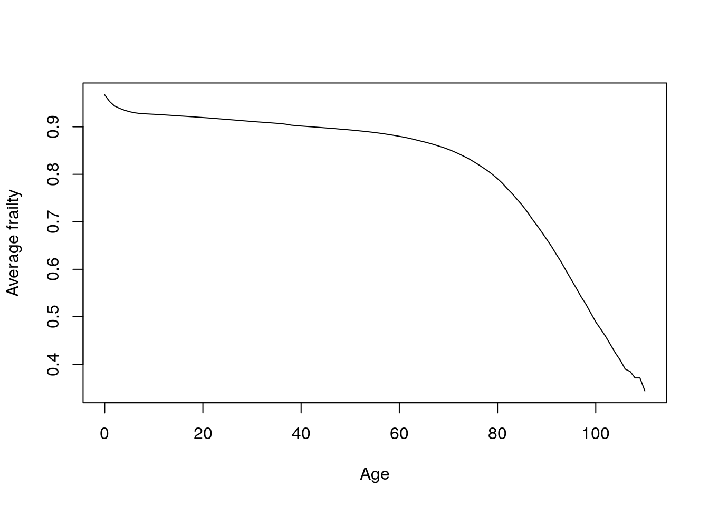
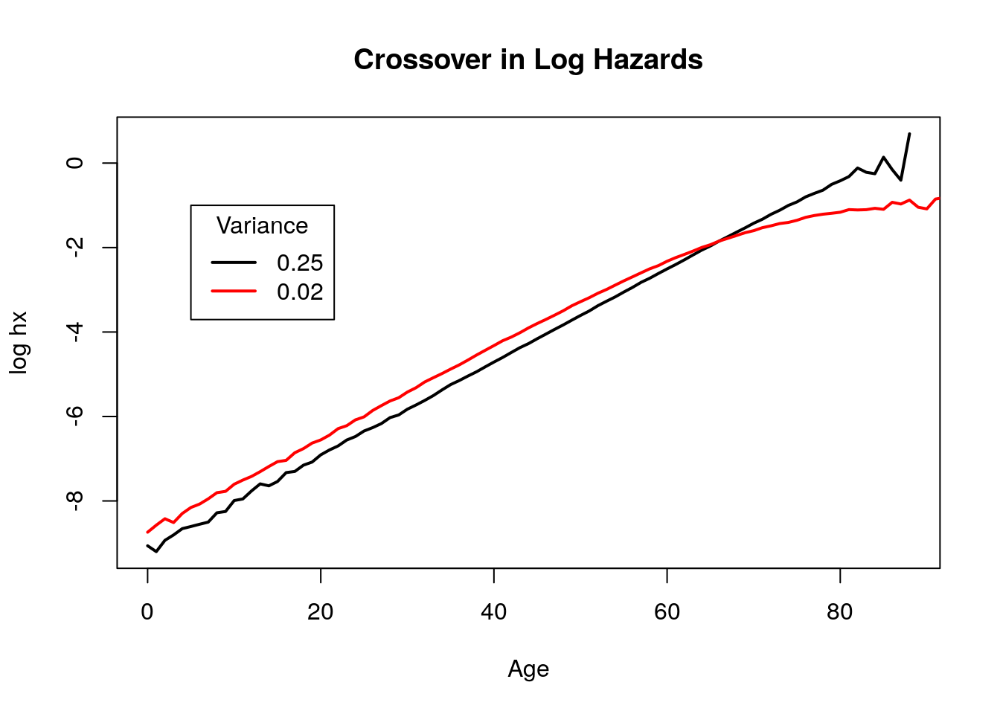
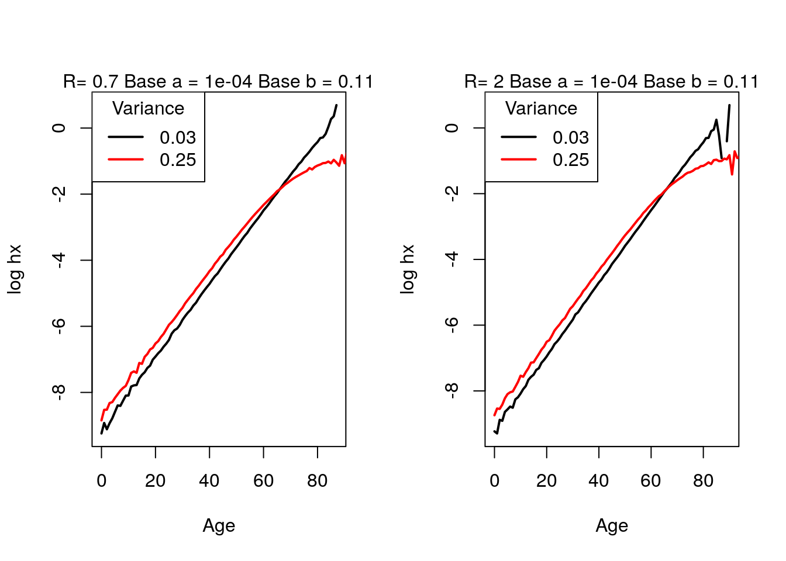
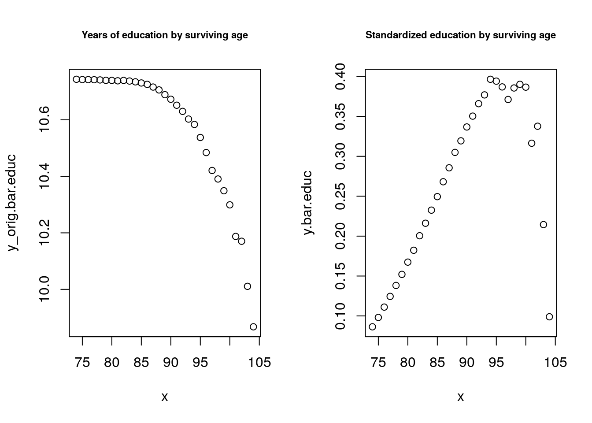

Chapter 3 Problem set 3
3.1 Questions
- Under gamma frailty, we obtained an explicit expression for average frailty by age for any baseline hazard schedule. \[ \bar{z}=\frac{1}{1+\sigma^2 H_0(x)}\] Assume baseline mortality is Gompertz (say with a = \(10^{-4}\) and b = 1/12). Try a couple of different values of \(\sigma^2\) (but make sure one of these values is 1/7 for comparability with the next problem). Describe what happens to average frailty at older ages. Does it decrease exponentially? If so, is there an age at which the rate of decrease equals (or at least comes very close to) the exponential rate of increase in baseline hazards b? Does this age depend on \(\sigma^2\)?
- Obtain from the Human Mortality Database a schedule of single-year-of-age, cohort mortality rates for females born in 1880 in Italy. Use the “inversion formula” for the gamma distribution to obtain the baseline hazards implied by \(\sigma^2= 1/7\). Plot the observed and implied baseline schedule. Plot the average frailty by age. Do your results resemble or differ from the Gompertz case above ?
- Derive V&M ’s result (5E):\[\overline{R}(x) \equiv \frac{\bar{\mu}_2(x)}{\bar{\mu}_1(x)} = \frac{R + R \sigma_1^2 H_1(x)}{1 + R \sigma_2^2 H_1(x)} \]
- Use mathematics to say what the determinants of the age of crossover are in terms of the respective frailty variances, R, and a baseline Gompertz schedule.
- Simulate this cross over with two proportional Gompertz schedules, with different frailty variances. Can you get a cross-over? If so, does it occur when cumulative hazard satisfy the condition (in small font) at the end of 5E?
- Use simulation to say what the determinants of the age of crossover are in terms of the respective frailty variances, R, and the baseline Gompertz schedule.
- Get two Italian cohorts 20 years apart and calculate the rate of mortality improvement by age \(\rho(x)\) that you observe and that which you would have observed had there been no frailty. For frailty, assume gamma-distributed with \(\sigma^2 = 1/5\).
- Extend the CenSoc demonstration of changing characteristics with age in at least one of the following ways
- Use years of education instead of wage income.
- Use both years of education and wage income.
- Analyze Blacks and Whites separately using wage income? Is the variance of “observed heterogeneity” (\(\hat{z}_{obs}\)) larger for one group. Discuss briefly.
3.2 Solutions
- Under gamma frailty, we obtained an explicit expression for average frailty by age for any baseline hazard schedule. \[ \bar{z}=\frac{1}{1+\sigma^2 H_0(x)}\] Assume baseline mortality is Gompertz (say with a = \(10^{-4}\) and b = 1/12). Try a couple of different values of \(\sigma^2\) (but make sure one of these values is 1/7 for comparability with the next problem). Describe what happens to average frailty at older ages. Does it decrease exponentially? If so, is there an age at which the rate of decrease equals (or at least comes very close to) the exponential rate of increase in baseline hazards \(b\)? Does this age depend on \(\sigma^2\)?
Let \(H_0\) be a gompertz curve with parameters a = \(10^{-4}\) and b = 1/12. The average frailty over age depends on the level of \(\sigma^2\) as seen by the left handside graph. As \(\sigma^2\) increases, average fraily decreases at an exponential rate at earlier ages. That is, when \(\sigma^2\) is very large (ie, 50) the exponential decrease begins almost instantly. However, with a very small \(\sigma^2\) of 0.01 the average frailty is almost constant except at older ages. Therefore \(\sigma^2\) determines when average frailty starts to decrease.
The graph on the right shows the derivative over ages of each of the average frailty curves as well as the \(b\) parameter of the baseline Gompertz mortality (in blue). Regardless of the the value of \(\sigma^2\), none of the derivatives are close enough to equal the \(b\) parameter.Analytically, the derivative of average frailty is always going to be negative and very small. \[\frac{d}{dx}\bar{z}= -\sigma^2ae^{bx}\bar{z}(x)^2\].
Figure 3.1: Average frailty by age
- Obtain from the Human Mortality Database a schedule of single-year-of-age, cohort mortality rates for females born in 1880 in Italy. Use the “inversion formula” for the gamma distribution to obtain the baseline hazards implied by \(\sigma^2= 1/7\). Plot the observed and implied baseline schedule. Plot the average frailty by age. Do your results resemble or differ from the Gompertz case above ?
In order to get the baseline hazards implied by \(\sigma^2\) = 1/7, we can use the inversion formula \[\mu_0 (x) = \bar{\mu}(x)e^{\sigma^2\bar{H}(x)}\]
Taking logs, this gives us \[log(\mu_0 (x)) = log(\bar{\mu}(x))+{\sigma^2log(\bar{H}(x))}\]
\(H(x)\) is equal to the summation of \(\mu(x)\) in continuous time, so we can take the cumulative sum of these mortality rates to get the cumulative hazards. We can then use this to calculate the baseline hazards schedule.
Now let’s plot average frailty by age. While the shape of the mean frailty graph is the same in both cases, average frailty seems to decline more rapidly here than in the Gompertz case (this is driven by early ages.)
Figure 3.2: Observed and implied hazards
Figure 3.3: Observed and implied hazards
- Derive V&M ’s result (5E)
Since \(\mu_2(x) = R\mu_1(x)\) and frailty is distributed gamma with variances \(\sigma_1^2\) and \(\sigma_2^2\), respectively, we can rewrite \[\bar{R}(x) = \frac{\bar{\mu_2}(x)}{\bar{\mu_1(x)}}\] as
\[\begin{aligned} \bar{R}(x) & = {\mu_2(x) \over 1+\sigma^2_2H_2(x)} \times{1+H_1(x)\sigma^2_1 \over \mu_1(x)} \\ & = { \bar{\mu}_2(x) \over \bar{\mu}_1(x) }\times { 1+H_1(x)\sigma^2_1 \over 1+H_2(x)\sigma^2_2 } \end{aligned}\] Since \(H_2 = R*H_1\), \[\begin{aligned} & = {R} \times { 1+\sigma^2_1 H_1(x) \over 1+R\sigma^2_2 H_1(x) }\\ & = { R+R\sigma^2_1 H_1(x) \over 1+R\sigma^2_2 H_1(x) } \end{aligned}\] - Use mathematics to say what the determinants of the age of crossover are in terms of the respective frailty variances, R, and a baseline Gompertz schedule.
The age crossover occurs at \(\bar{u_1} = \bar{u_2}\), which occurs at \(\bar{R} = 1\). Rearranging 5E after equating it to 1 gives us \[1+R\sigma_2^2(H_1(x_c)) = R+R\sigma_1^2(H_1(x_c))\] \[H_1(x_c)(R\sigma_1^2 - R\sigma_2^2) = 1-R\] \[H_1(x_c) = { R -1 \over R(\sigma_2^2 - \sigma_1^2)}\] Assuming a baseline hazard schedule \(H_1(x)\) that is Gompertzian, we can solve to get the age of crossover \(x_c\). \[ \begin{aligned} {a \over b}(e^{bx_c} -1) & = { R -1 \over R(\sigma_2^2 - \sigma_1^2)} \\ x_c & = {1 \over b} \log \bigg({ {(b/a)(R-1)}\over R(\sigma^2_2-\sigma^2_1)} +1\bigg) \end{aligned}\] Simulate this cross over with two proportional Gompertz schedules, with different frailty variances. Can you get a cross-over? If so, does it occur when cumulative hazard satisfy the condition (in small font) at the end of 5E?
Now we can graph this to observe the crossover. In Problem 4, we calculate an age where this crossover would occur based on 5E, and here, graphing that line in grey, we see that the crossover occurs at exactly that point.
We borrow the frailty simulation function from problem set 2 and use it to create two schedules with Gamma frailty distributions (with different variances) and where the scales of the gompertz curves are proportional.

Figure 3.4: Mortality crossover
Use simulation to say what the determinants of the age of crossover are in terms of the respective frailty variances, R, and the baseline Gompertz schedule.
If we alter any of the parameters here, it would change the age of crossover in accordance with that observed in Problem 4. We can simulate this by writing the previous code as a function and running it with different parameters.Now let’s run this for different values of alpha, beta, R, and the two variances. In the first set of graphs, changing the two variances to compare when they are very different and when they are very similar. Age of crossover does not seem to change very much.get.crossover.plot <- function( N, sigmasq.1.fun, sigmasq.2.fun, beta.fun, alpha.fun, R.fun) { #Now let's generate the zs for this using the rgamma function. z1.fun <- rgamma(N, shape = 1/sigmasq.1, scale = sigmasq.1) z2.fun <- rgamma(N, shape = 1/sigmasq.2, scale = sigmasq.2) #Since these are proportional Gompertzian schedules, they will have the same b but different alphas, scaled by R #We can use the frailty simulation function from now onwards schedule1 <- frailty_sim(N, z1.fun, base.a = alpha.fun, base.b =beta.fun) schedule2 <- frailty_sim(N, z2.fun, base.a = R*alpha.fun, base.b =beta.fun) #Crossover plots plot(schedule1$frailty$x, log(schedule1$frailty$mx), type = "l", lty = 1, lwd = 2, col = "black", xlab = "Age", ylab = "log hx") lines(schedule2$frailty$x, log(schedule2$frailty$mx), type = "l", col = "red", lty = 1, lwd = 2) legend("topleft", title = "Variance", legend = c(sigmasq.1.fun, sigmasq.2.fun ), col = c("black", "red"), lwd = 2,lty = 1) mtext(paste0("R= ", R.fun," Base a = ", alpha.fun, " Base b = ", round(beta.fun,2) ), side=3) }
Then, when changing alpha so that we can compare a very small alpha with a large one, a crossover occurs earlier with a larger value.
Figure 3.5: Crossover: changing variances
By changing beta to compare a very small beta and a large one, we get a crossover very early with a large beta.Figure 3.6: Crossover: changing Gompertz \(a\) parameter
Finally, if we compare a large and small r, there does not seem to be a difference in the crossover ages.
Figure 3.7: Crossover: changing Gompertz \(b\) parameter

Figure 3.8: Crossover: changing \(R\)
Get two Italian cohorts 20 years apart and calculate the rate of mortality improvement by age \(\rho(x)\) that you observe and that which you would have observed had there been no frailty. For frailty, assume gamma-distributed with \(\sigma^2 = 1/5\).
The observed rate of mortality improvement can be calculated using \[ \bar{\rho}(x,t) = - {1 \over t} \log {m_{t2}(x) \over m_{t1}(x) }\] and the version with frailty can be calculated using: \[ \rho(x,t) = \bar{\rho}(x,t) + \sigma^2\ {d \over dt}\bar{S}_c (x,t) \] Now we can calculate the rates of improvement in mortality and compare them. When we assume frailty, we get a higher rate of improvement at the older ages than in the observed case.
We obtain the Italian cohort female lifetable (1x1) from the Human Mortality Database (HMD).

Figure 3.9: Mortality improvement
- Extend the CenSoc demonstration of changing characteristics with age in at least one of the following ways
- Use years of education instead of wage income.
- Use both years of education and wage income.
Analyze Blacks and Whites separately using wage income? Is the variance of “observed heterogeneity” (\(\hat{z}_{obs}\)) larger for one group. Discuss briefly.
Let’s see how this changes for education.
- Use years of education instead of wage income.
## NULL## NULL b. If we wanted to see how income and education work together, we could do this in a variety of ways, such as creating an index for the two variables. Then we could run the same code from earlier. Here, I multiply the two variables by each other, which is not ideal but will give us some proxy for the two.
```
## byear V1
## 1: 1897 107.0833
## 2: 1900 104.9167
## 3: 1899 105.5833
## 4: 1898 106.8333
## 5: 1895 109.0833
## 6: 1896 107.9167
```
```
## histid dyear byear dmonth bmonth census_age death_age educyrs
## 1: D4C1CED5-E21B-452F-B027-E07973C8D5A5 2000 1895 12 9 44 105 12
## 2: 4D1C6991-6D01-4903-ADBB-71F379F4AA96 2000 1895 11 1 45 105 8
## 3: 0DD41551-07AF-4D4B-92BF-C11E49007B80 2001 1895 4 5 44 105 9
## 4: 800EEA26-72C5-4DED-80B0-A4682677BCED 2003 1897 11 12 42 105 4
## 5: 85077BBB-A8B7-4DF0-BDEB-C3382460197B 2000 1895 12 9 44 105 9
## ---
## 125: 8B07E413-E7AA-458F-8759-EA4709AC616B 2003 1897 5 3 43 106 11
## 126: 3CCDDB6D-9CC5-4184-82CA-4795091F80E0 2001 1895 12 1 45 106 9
## 127: 6E1417C4-AABC-412E-94CC-E1996BC78BDD 2003 1897 3 6 42 105 10
## 128: C518CB1F-04E7-472F-8D08-F222E3889077 2002 1895 2 2 45 106 18
## 129: 688320D5-F9FF-4B98-9EBF-1F7116C53636 2004 1898 5 11 41 105 15
## hispan race bpl mbpl fbpl empstat incwage
## 1: Not Hispanic White Arkansas <NA> <NA> At work, public emerg 736
## 2: Not Hispanic White Arkansas <NA> <NA> At work NA
## 3: Not Hispanic White Ohio <NA> <NA> At work 2080
## 4: Not Hispanic Chinese China <NA> <NA> At work 1200
## 5: Not Hispanic White Nebraska Missouri Missouri At work 1900
## ---
## 125: Not Hispanic White Wisconsin <NA> Germany At work NA
## 126: Not Hispanic Black/African American West Virginia <NA> <NA> At work 300
## 127: Not Hispanic White West Virginia <NA> <NA> At work 1200
## 128: Not Hispanic White Minnesota <NA> <NA> At work 4000
## 129: Not Hispanic White Nebraska Nebraska <NA> At work NA
## marst occscore ownershp urban fipstate
## 1: Married, spouse present 22 Rented Rural Arkansas
## 2: Married, spouse present 23 Owned or being bought Rural Arkansas
## 3: Divorced 20 Owned or being bought Rural California
## 4: Never married/single 13 Rented Urban California
## 5: Married, spouse present 21 Owned or being bought Rural California
## ---
## 125: Never married/single 11 Owned or being bought Rural Wisconsin
## 126: Married, spouse present 21 Rented Rural West Virginia
## 127: Married, spouse present 20 Rented Urban West Virginia
## 128: Married, spouse present 33 Rented Rural Wyoming
## 129: Never married/single 3 Owned or being bought Rural Wyoming
## incnonwg educ occ rent
## 1: Less than $50 nonwage, nonsalary income Grade 11 Clerical and kindred workers (n.e.c.) 7
## 2: $50+ nonwage, nonsalary income Grade 7 Buyers and shippers, farm products <NA>
## 3: Less than $50 nonwage, nonsalary income Grade 8 Operative and kindred workers (nec) <NA>
## 4: Less than $50 nonwage, nonsalary income Grade 3 Cooks, except private household 25
## 5: Less than $50 nonwage, nonsalary income Grade 8 Carpenters <NA>
## ---
## 125: $50+ nonwage, nonsalary income Grade 10 Farmers (owners and tenants) <NA>
## 126: Less than $50 nonwage, nonsalary income Grade 8 Mine operatives and laborers 12
## 127: Less than $50 nonwage, nonsalary income Grade 9 Operative and kindred workers (nec) 20
## 128: Less than $50 nonwage, nonsalary income 5+ years of college Stationary engineers 25
## 129: $50+ nonwage, nonsalary income 2 years of college Farm laborers, unpaid family workers <NA>
## weight dday bday y_orig_educ educyrs_mean y_educ age.at.death
## 1: 5.273636 5 27 12 9.779898 2.22010218 105.2500
## 2: 5.273636 9 24 8 9.779898 -1.77989782 105.8333
## 3: 4.101000 4 28 9 9.779898 -0.77989782 105.9167
## 4: 2.846923 5 27 4 9.955029 -5.95502854 105.9167
## 5: 5.273636 13 14 9 9.779898 -0.77989782 105.2500
## ---
## 125: 8.252500 8 3 11 9.955029 1.04497146 106.1667
## 126: 8.002500 8 3 9 9.779898 -0.77989782 106.9167
## 127: 2.846923 31 8 10 9.955029 0.04497146 105.7500
## 128: 4.200000 4 26 18 9.779898 8.22010218 107.0000
## 129: 4.455455 4 9 15 10.074551 4.92544906 105.5000
```
```
## histid dyear byear dmonth bmonth census_age death_age educyrs
## 1: 40263A47-2326-457A-9B39-23C3A1EB6B62 2004 1900 8 3 40 104 5
## 2: 2DE26A35-C0A3-4B84-9617-969C7D865411 1999 1895 12 8 44 104 8
## 3: 3847A6C1-CE3E-487B-83D3-E625F67BC0D9 2004 1900 1 1 40 103 13
## 4: 913D273F-7569-4440-824D-DEB557477530 1999 1895 6 6 44 104 13
## 5: 75DAB0E7-6E5B-4A5B-9593-EFF92395CC8B 2002 1898 10 6 41 104 17
## ---
## 192: FDD066DD-4978-440F-901C-20F6563B0856 2002 1898 9 3 42 104 9
## 193: B1B3AAA0-C054-4E00-B481-E8608E5D72B0 2000 1895 10 12 44 104 11
## 194: EB838184-1F2B-42F6-B02B-CD91B5B22235 2000 1895 7 12 44 104 6
## 195: 33121249-5268-45D5-924E-CE438126D3A3 2001 1897 12 11 42 104 9
## 196: 5F9FE1CB-FC75-4921-9FAA-CCA4D33696E1 2001 1897 6 5 42 104 9
## hispan race bpl mbpl fbpl empstat incwage marst
## 1: Not Hispanic Black/African American Alabama <NA> <NA> At work 130 Widowed
## 2: Not Hispanic White Arkansas <NA> <NA> At work 156 Married, spouse present
## 3: Not Hispanic White Missouri <NA> <NA> At work 1500 Widowed
## 4: Other White Spain <NA> <NA> At work 1400 Married, spouse present
## 5: Not Hispanic White California <NA> <NA> At work 1560 Married, spouse present
## ---
## 192: Not Hispanic White West Virginia <NA> <NA> At work 1560 Married, spouse present
## 193: Not Hispanic White West Virginia <NA> <NA> At work 2519 Never married/single
## 194: Not Hispanic White Georgia <NA> <NA> At work 2340 Married, spouse present
## 195: Not Hispanic White West Virginia <NA> <NA> At work NA Married, spouse present
## 196: Not Hispanic White Minnesota <NA> <NA> At work 2200 Married, spouse present
## occscore ownershp urban fipstate incnonwg
## 1: 4 Rented Urban Alabama Less than $50 nonwage, nonsalary income
## 2: 7 Rented Rural Arkansas $50+ nonwage, nonsalary income
## 3: 19 Owned or being bought Urban Arizona Less than $50 nonwage, nonsalary income
## 4: 17 Owned or being bought Urban California Less than $50 nonwage, nonsalary income
## 5: 27 Owned or being bought Rural California Less than $50 nonwage, nonsalary income
## ---
## 192: 29 Owned or being bought Rural West Virginia Less than $50 nonwage, nonsalary income
## 193: 39 Owned or being bought Urban West Virginia Less than $50 nonwage, nonsalary income
## 194: 19 Owned or being bought Rural West Virginia Less than $50 nonwage, nonsalary income
## 195: 11 Owned or being bought Rural West Virginia $50+ nonwage, nonsalary income
## 196: 39 Owned or being bought Urban Wyoming Less than $50 nonwage, nonsalary income
## educ occ rent weight dday bday y_orig_educ
## 1: Grade 4 Private household workers (nec) 3 3.018929 26 4 5
## 2: Grade 7 Farm laborers, wage workers 2 3.762857 5 12 8
## 3: Grade 12 Stenographers, typists, and secretaries <NA> 3.262619 21 22 13
## 4: Grade 12 Laborers (nec) <NA> 3.762857 15 15 13
## 5: 4 years of college Mechanics and repairmen (nec) <NA> 5.438750 4 14 17
## ---
## 192: Grade 8 Policemen and detectives <NA> 5.438750 14 18 9
## 193: Grade 10 Managers, officials, and proprietors (nec) <NA> 3.273636 2 18 11
## 194: Grade 5 Stenographers, typists, and secretaries <NA> 3.273636 27 9 6
## 195: Grade 8 Farmers (owners and tenants) <NA> 5.295294 18 14 9
## 196: Grade 8 Managers, officials, and proprietors (nec) <NA> 5.295294 18 22 9
## educyrs_mean y_educ age.at.death
## 1: 10.081606 -5.0816062 104.4167
## 2: 9.779898 -1.7798978 104.3333
## 3: 10.081606 2.9183938 104.0000
## 4: 9.779898 3.2201022 104.0000
## 5: 10.074551 6.9254491 104.3333
## ---
## 192: 10.074551 -1.0745509 104.5000
## 193: 9.779898 1.2201022 104.8333
## 194: 9.779898 -3.7798978 104.5833
## 195: 9.955029 -0.9550285 104.0833
## 196: 9.955029 -0.9550285 104.0833
```
```
## NULL
```
```
## NULL
```
<img src="bookdown-demo_files/figure-html/unnamed-chunk-37-1.png" width="672" />
c. We'll run the wage income comparison for Blacks and Whites separately. To this we need the other file that Josh uses, so we'll run the previous data cleaning code again as well.
Now let's graph these two. We can see a decline in log wages with age for Blacks that we do not observe for Whites, for whom this tends to increase by age. This suggests that we may observe greater variance in heterogeneity for blacks than for Whites. ## NULL## NULL
## NULL## NULL